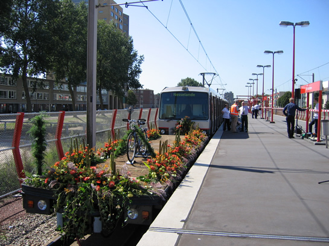
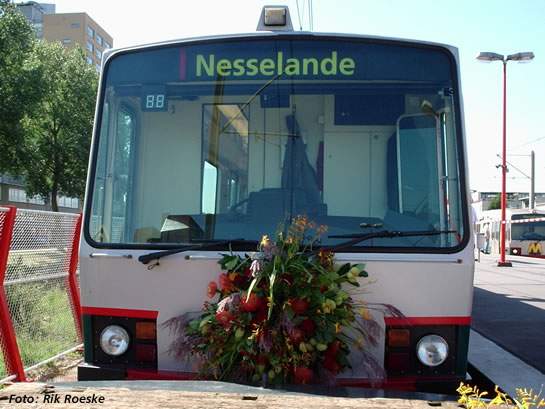
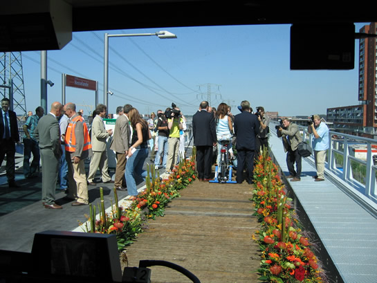
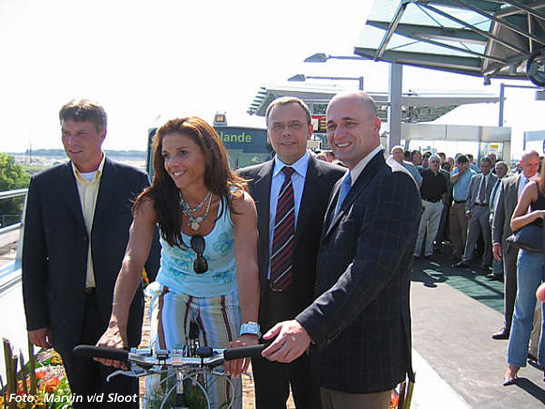
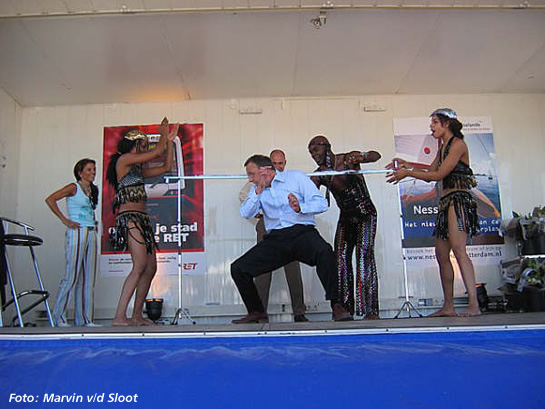
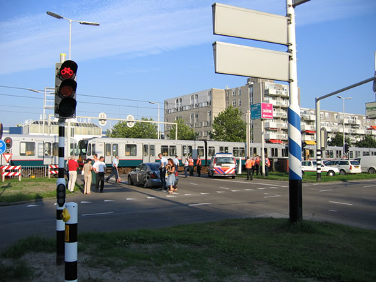
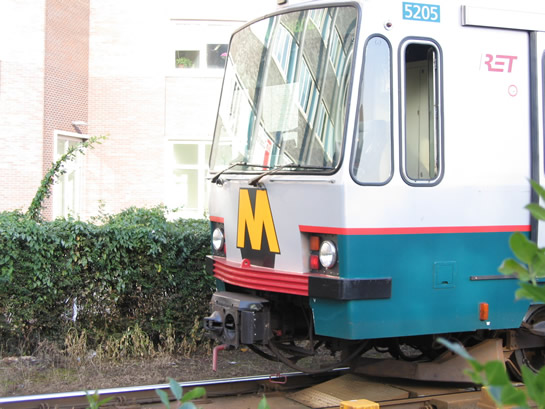
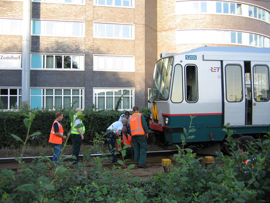
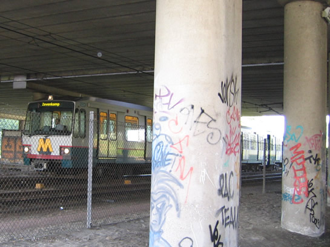

Openingsdag Nesselandelijn eindigt met aanrijding op Hoofdweg...
- zondag 07 december 2008 18:12
- Geschreven door Joachim
Gisteren werd de Nesselandelijn officieel geopend door wielrenster Zijlaard- van Moorsel, algemeen directeur Peters en wethouder, tevens portefeuillehouder Verkeer en Vervoer Rotterdam, Hulman. Wilfried de Jong was aanwezig als presentator.
De Nesselandelijn is een verlenging van de Calandlijn in het oosten, vanaf station De Tochten in Zevenkamp. De aanleg van de lijn heeft €50 miljoen gekost, de bouw duurde ongeveer drieënhalf jaar. Vanaf station De Tochten wordt omgeschakeld van sneltram- naar metrobedrijf en ligt het tracé op een 1700m lang viaduct. Er is één station bijgekomen, "Nesselande".
Voor de feestelijke rit was gekozen voor twee Type T-rijtuigen (5268, 5216) met daarvoor gekoppeld een platte wagen (7012), gedecoreerd met bloemen en daarop een fiets. Ook rijtuig 5268 droeg een groot boeket op de voorzijde. Omstreeks 13.30 uur arriveerden de genodigden op station De Tochten en reden even later met de feestelijke combinatie richting het nieuwe station Nesselande. De metro werd door van Moorsel op de fiets, "voortgetrokken".
Nadat op station Nesselande de pers toegesproken was, werd koers gezet naar het strand aan de Zevenhuizerplas. Daar werd de opening afgesloten met een borrel en een optreden van de Jomo Jones Limbo Show, waar van Moorsel, Peters en Hulman ook aan mee deden.
Foto's: Rik Roeske, Marvin v/d Sloot en retmetro.nl.

Station De Tochten spoor 2, 7012 (met fiets), 5268 en 5216 staan opgesteld voor vertrek.

Op de plaats waar normaal het metrologo staat, nu een groot boeket. Overigens werden de 5268 en de 5216 later in de middag alweer in dienst gesignaleerd (zonder decoraties).

Het uitzicht vanuit de cabine op de platte wagen.

Kort wordt de tijd genomen voor foto's en persvoorlichting.

Op het strand van de Zevenhuizerplas doen Hulman, van Moorsel en Peters mee aan de limbodancedemonstratie.
Aanrijding Hoofdweg
Een van de metrodiensten richting Nesselande, kwam gisteren omstreeks 17.50 uur niet verder dan de Hoofdweg in de Pr. Alexanderpolder. Op spoor 2 kwam wagendienst 563, bestaande uit de rijtuigen 5205, 5255 en 5254 in aanrijding met een personenauto. De schade viel mee, over letsel is niets bekend.
Gedurende de aanrijding werd er enkelspoorbedrijf gereden tussen de wisselcomplexen Alexander 1 en Prinsenlaan via spoor 1. Vertragingen konden oplopen tot ongeveer 20 minuten. De pendel Kralingse Zoom - Binnenhof v.v. startte een half uur later en reed pas om 20.15 uur met enkele rijtuigen.
Omstreeks 19.40 uur werd de kruising weer vrijgegeven, waarna met de 5205, 5255 en 5254 diverse remmentesten werden genomen op weg richting Nesselande. De combinatie ging direct buiten dienst, omdat rijtuig 5205 schade had aan de automatische koppeling. Vanaf 20.00 uur werden beide sporen weer gebruikt tussen eerder genoemde wisselcomplexen.
Wanneer de AHOB gestoord is, vervalt een eerste aanvraag van de verkeersregelinstallatie. Het negenoog (in combinatie met het ATS-sein) zal dan rood blijven, totdat een tweede aanvraag gemaakt wordt direct naast de combinatie negenoog/ATS-sein. Dit duurt soms meer dan een halve minuut. Omdat de AHOB gestoord is, zal het ATS-sein blauw blijven.

Overzichtsfoto: op de voorgrond de getroffen auto, op de achtergrond wagendienst 563, welke de gehele Hoofdweg blokkeert. Het verkeer wordt omgeleid.

Rijtuig 5205, schade aan de koppeling en aan de groene oppervlakte direct onder de bumper.

De schade aan het rijtuig wordt opgenomen door RET Service&Onderhoud 's-Gravenweg.

Gedurende de stremming werd enkelspoorbedrijf gereden. Hier rijtuig 5229, wachtend op een rijweg voor het tweede S-bord van wisselcomplex Alexander 1.